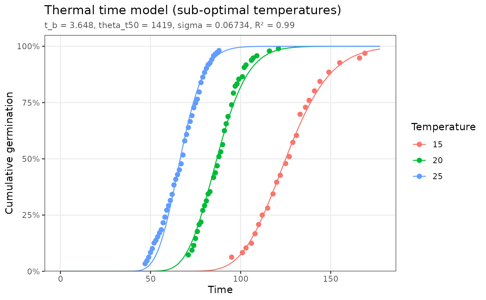
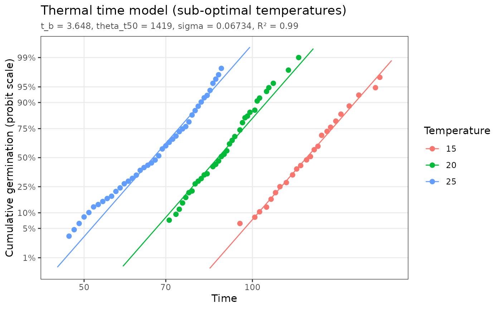
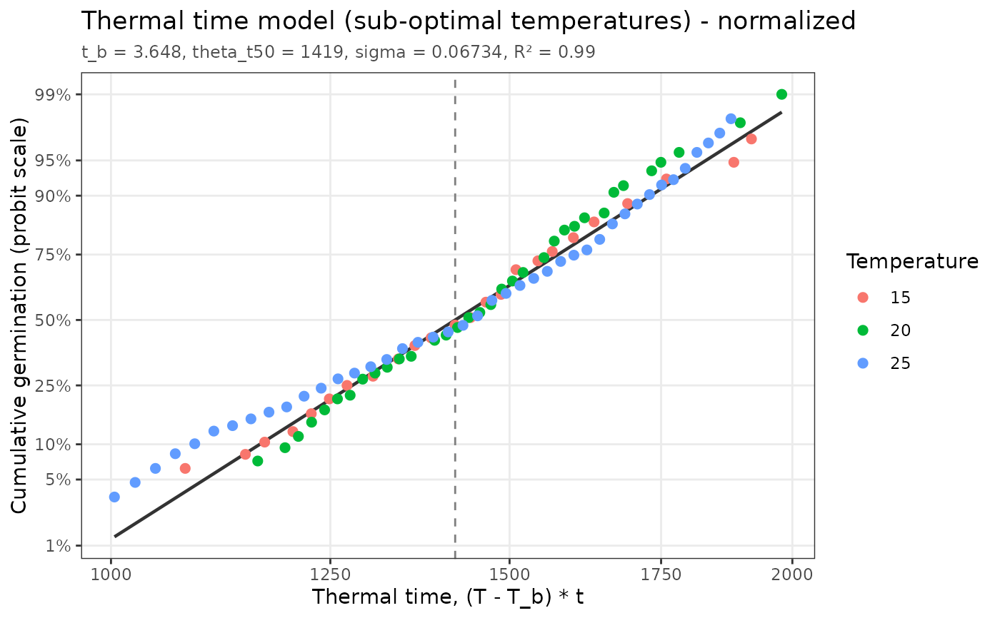

Draws the data used to fit a model together with the fitted model, with optional linearizing axis transforms.
Arguments
- object
A
pbtm_fitobject.- type
"fit"or"normalized"; see Plot types.- x_scale
"linear"or"log"(log10) x axis. Fortype = "normalized"the default is"log"for thermal time and"linear"otherwise.- y_scale
"linear","probit", or"logit"fraction axis for cumulative models;"linear"or"log"rate axis for rate models. The default is"linear", or"probit"fortype = "normalized".- show_params
Show the parameter estimates as a subtitle?
- n
Number of points used to draw each fitted curve.
- ...
Passed from
plot()toautoplot().- x
A
pbtm_fitobject.
Plot types
type = "fit"(default): for cumulative models, the cumulative fraction germinated against time, with one fitted curve per treatment level; for rate models, germination rate against priming time with the fitted line.type = "normalized"(single-population cumulative models only): every observation is placed on the model's normalized axis (e.g. thermal time \((T - T_b)t\) for thermal time, or \(\psi - \theta_H/t\) for hydrotime) and the fraction is rescaled bymax_frac. All treatments then collapse onto the single population distribution, which is a straight line on a probit fraction axis. The dashed line marks the population median.
Linearized scales
The cumulative models are normal (or, for thermal time, log-normal)
distributions, so a probit fraction axis (y_scale = "probit", the normal
quantile of the fraction) straightens them. For thermal time, whose
distribution is log-normal in time, combining x_scale = "log" with
y_scale = "probit" makes each temperature's fitted curve an exact straight
line; for the other models the fitted curves become close to linear. A
"logit" fraction axis is also available and looks very similar. Points at
0% or 100% germination (and times of zero on a log axis) cannot be shown on
these scales and are dropped with a message. For rate models, "log" on
both axes gives a log-log plot of rate against priming time.
Examples
fit <- fit_thermal_time(thermal_time_data)
autoplot(fit)

# log time and probit fraction: each temperature becomes a straight line
autoplot(fit, x_scale = "log", y_scale = "probit")

# all temperatures collapse onto one line on the normalized axis
autoplot(fit, type = "normalized")
